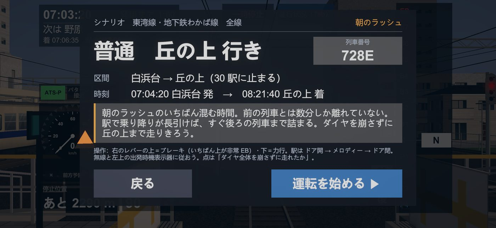

数分おきに各駅停車が走る通勤路線。あなたが運転するのは、その中の1本だけです。ほかの電車は自動で走り、遅れは後ろへ伝わり、指令から運転整理がかかります。
近日公開 ただいまストアの審査中です

運転の上手さだけでは、点にならない
ぴったり止める技術よりも、前の電車と間隔を保ち、乱れたダイヤを後ろへ広げずに走りきることが大事です。運転士の席から、運行の流れそのものに加わります。
朝のラッシュは、前の電車とのあいだが数分しかありません。駅で乗り降りが長引けば前が詰まり、目の前の信号が黄色に、赤に変わります。
後ろの電車で急病人、踏切の支障、ドアの挟まり。指令の列車無線が流れ、駅の出発時機表示器に間隔の調整が出ます。
ATS・ATC が速度を見張っています。信号を無視して走ることはできません。パターンに当たればブレーキがかかります。
できること
速度計、停止位置までの距離、この先の制限速度と信号の予告。運転に要るものは、すべて運転台に出ています。右のレバーを指で動かして、力行とブレーキを操ります。

ダイヤが乱れると、指令から間隔の調整がかかります。駅の表示器に出た時刻まで発車を待ち、前後の電車との間隔を整えます。
長い停車では、ドアを開けたあとに「スキップ」で発車の少し前まで進められます。

一時停止すると、路線の全部の電車の位置と遅れ、信号と進路が見えます。出来事が起きたとき、指令がどう判断したかも、ここに順に残ります。

駅に着いたら、ドアを開け、発車メロディーを自分で鳴らし、ドアを閉めて発車します。車掌の放送と駅の放送も流れます。乗り入れ先の地下鉄の駅では、放送の声も発車の合図も変わります。

地上から地下へ、朝から夜へ
高架と切通しを抜け、坑口から地下へ。朝・昼・夕方・夜で光が変わり、夜は街の窓の灯りと駅の蛍光灯の中を、前照灯で線路を照らして走ります。



無料で遊べるシナリオ
シナリオは、途中の駅から始まります。決められた列車番号の電車に乗り、決められた駅まで運転します。
朝のラッシュのいちばん混む時間。港町を出たら、指令の無線をよく聞いてください。後ろの電車で起きたことが、あなたの発車の時刻を変えます。出発時機表示器に従って発車し、地下の南大川から地上へ出て、ダイヤを崩さずに夕日町まで。
窓の灯りがいちばん多い時間。白浜台を出ると、踏切の続く地上の区間を走ります。踏切の手前の特殊信号発光機が光ったら、すぐに非常ブレーキ。時刻どおりに桜町まで。
「すべてのシナリオ」を購入すると、全線（30駅・約48km）を走る有料のシナリオ8本（朝・昼・夕方・夜 × 上下の両方向・約77分ずつ）が遊べます。
遊びかた
時間帯と区間、列車番号を見て、運転する電車を選びます。
ドアを閉め、信号を確かめて、レバーで力行。次の駅の到着時刻を目指します。
無線が入り、ダイヤが乱れます。信号と表示器に従い、間隔を整えて走ります。
遅れ、停止位置、信号とATSの扱い。ダイヤ全体を崩さずに走れたかが点になります。
料金
アプリは無料です。無料のシナリオ2本を遊んで、気に入ったら「すべてのシナリオ」を。月額の支払いはありません。
0円
980円（税込・買い切り）
よくある質問
必要ありません。インストールしてすぐに始められます。氏名やメールアドレスはお預かりしません。
かかりません。「すべてのシナリオ」は一度だけ支払う買い切りです。自動で更新されることはありません。
新しい端末で、同じ Apple ID または Google アカウントでアプリを入れ、タイトル画面の「購入を復元」を押すと戻せます。iPhone と Android のあいだでは引き継げません。
iOS 15.0 以降の iPhone と、Android 8.0 以降のスマートフォンです。3D の景色を描くため、新しめの端末をおすすめします。
いいえ。路線・駅・会社・電車は、すべてこのゲームのために作った架空のものです。実在の鉄道会社とは関係ありません。
遊べます。購入と「購入を復元」のときだけ、インターネットにつながっている必要があります。
本作に登場する路線・駅・会社・列車は、すべて架空のものです。実在の鉄道会社・団体とは一切関係がありません。画面はすべて開発中のもので、内容は変更になる場合があります。
アプリは無料。登録なしで、すぐに無料のシナリオを運転できます。
近日公開 ただいまストアの審査中です